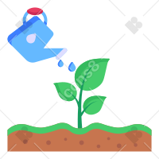

<!--Main Navigation-->
<header class="z-3 position-absolute p-2 rounded-3" >
    <!-- Sidebar -->

    <nav id="sidebarMenu" class="collapse d-lg-block sidebar collapse" style="background-color: #4b4022; ">
        <div class="position-sticky  h-100" >
            <div class="list-group list-group-flush mx-3 mt-2 p-4"
                style="background-color: #D1F4F0; border-radius: 10px 0px 0 0">
                

                <span href="#" class="list-group-item list-group-item-action py-2  d-flex justify-content-center "
                    style="background-color: #D1F4F0;">
                    
                </span>
                <span (click)="switchToit()"
                    class="list-group-item list-group-item-action py-2  d-flex justify-content-center "
                    style="background-color: #D1F4F0;">
                    
                </span>
                <a href="#" class="m-auto text text-success" (click)="switchToit()">
                    <span class="material-symbols-outlined" *ngIf="switchRoof" style="color:green">toggle_on</span>
                    <span class="material-symbols-outlined " *ngIf="!switchRoof" style="color:red">toggle_off</span>
                </a>

            </div>


            <div class="list-group list-group-flush mx-3 mt-4"
                style="background-color: #D1F4F0; border-radius: 0 0 0 10px;">

                <div class=" mb-2 shadow" style="background-color: #D1F4F0; ">
                    <span (click)="switchFan()" *ngIf="fan" style="background-color: #D1F4F0;"
                        class="list-group-item list-group-item-action py-2  d-flex justify-content-center ">
                        
                    </span>
                    <span (click)="switchFan()" *ngIf="!fan" style="background-color: #D1F4F0;"
                        class="list-group-item list-group-item-action py-2  d-flex justify-content-center ">
                        
                    </span>
                    <a href="#" class="m-auto  text text-success d-flex justify-content-center" (click)="switchFan()">
                        <span class="material-symbols-outlined" *ngIf="fan" style="color:green">toggle_on</span>
                        <span class="material-symbols-outlined " *ngIf="!fan" style="color:red">toggle_off</span>
                    </a>

                </div>


            </div>


        </div>

    </nav>

    <!-- Sidebar -->

    <!-- Navbar -->

    <!-- Navbar -->
</header>
<!--Main Navigation-->
<nav id="main-navbar " class="navbar mt-2 mb-4 nav d-flex justify-content-center shadow" >
    <!-- Container wrapper -->
    <div class="container-sm p-2  w-100   d-flex justify-content-around" >
        <!-- Toggle button -->
        <!-- Brand -->
        <a class="navbar-brand" href="#" (click)="switchInfo()"  data-toggle="tooltip" data-placement="top" title="Info serre">
            <span class="material-symbols-outlined" style=" size: 40px;">info</span>
        </a>

        <a class="navbar-brand" href="#" data-toggle="tooltip" data-placement="top" title="localisation">
            <span class="material-symbols-outlined" style=" size: 40px;">location_on</span>
        </a>

        <a class="navbar-brand" href="#" data-toggle="tooltip" data-placement="top" title="Info serre">
            <span class="material-symbols-outlined" style=" size: 40px;">sync_lock</span>
        </a>

        
        <a class="navbar-brand " href="#" style="display: block; margin-top: -30px;" data-toggle="tooltip" data-placement="top" title="Deconnexion">
            <span class="fs-6">{{currentDate}}</span>
            <div>
                <span class="material-symbols-outlined" style=" size: 40px;">logout</span>
            </div>
        </a>
        <!-- Search form -->
        <!-- Right links -->

    </div>
    <!-- Container wrapper -->
</nav>
<!--Main layout-->
<main>
    <div class="container">
        <app-dashbord></app-dashbord>
    </div>
</main>
<!--Main layout-->